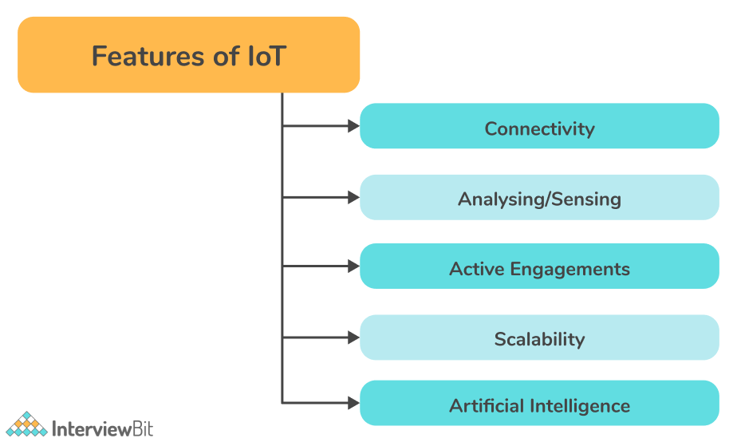
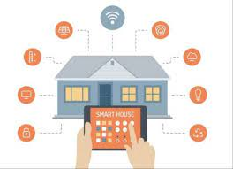
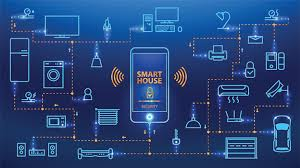
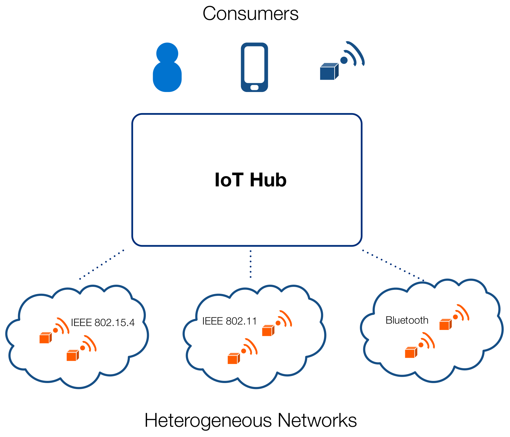
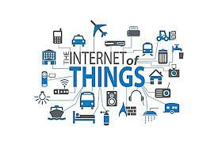
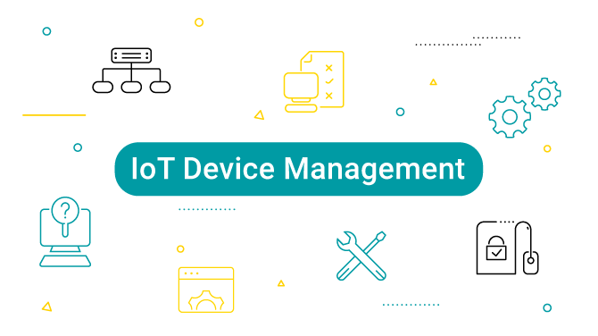

IoT technology works by using built-in sensors, software, and communication hardware to collect and send data generated by their usage and environment.

Characteristics of IoT
The following are the most important features of IoT on which it operates: Connectivity, Analyzing/Sensing, Active Engagements, Scalability, Artificial Intelligence
Advantages of IoT
It provides the following benefits: Improved customer engagement, Technical optimization, Ease of Access, Improved Insights, New business opportunities, Effective Time Management, etc
Risks associated with IoT
The following are some security risks associated with IoT:Privacy, Insufficient testing & Outdated product, Lack of knowledge and awareness, Network Connectivity, Reliability

Sample of IoT
Smart Homes: IoT is applied in smart homes to the best one combines intelligent systems and entertainment. Connect Health: the systems allow for real-time monitoring and patient care.

Explain how IoT works.
A sensor gets data from the environment and sent to a cloud. The software can process it and decide the next action, such as sending an alert adjusting the devices without user intervention.

What is replication?
In replication, data is synchronized between two or more servers. This is a method of storing the same data on more than one site or server. This feature allows data to be accessed during heavy traffic.

Define of IoT
It is referred to as a network comprised of interconnected physical objects that are capable of collecting and exchanging data about the surrounding or take actions based on data collected.

IoT device management
IoT device management involves provisioning, authenticating, etc the connected devices and software's. It is vital for ensuring the health, security, and connectivity of IoT devices.